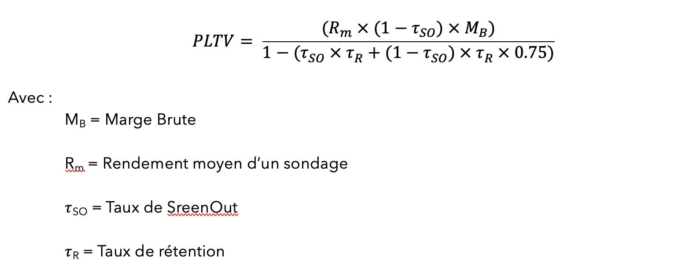
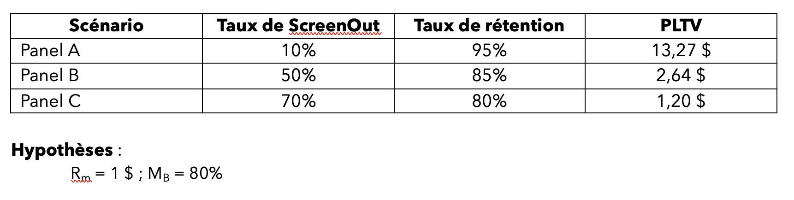
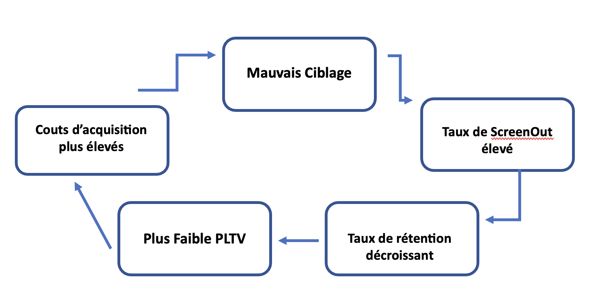

Moteur IA et Meilleures Performances
Contexte :
Il faut conserver et entretenir sa base d'utilisateurs !
Le panéliste est précieux, son cout d'acquisition s'accroit, les plus actifs, qui de-facto représentent une part importante du chiffre d'affaires, doivent être conservés (éviter les désinscriptions) et recevoir des enquêtes « bien calibrées ».
Mauvais ciblage et taux d'échec :
« Bad targeting » et « ScreenOut » :
Le mauvais ciblage « Bad targeting » dans l'envoi des enquêtes, généralement lié à une recherche textuelle trop limitée a pour effet de provoquer du mécontentement, voire une grande frustration chez les panélistes.
Dès lors que le panéliste répond sérieusement et le plus honnêtement possible, il ou elle supporte mal d'être éliminé vers la fin d'une enquête parce que son profil ne correspond pas à ce qui est recherché.
On parle de « ScreenOut ». Ainsi, cette frustration du « ScreenOut » finit par engendrer des désinscriptions, ce qui endommage la base de données et la réputation du panel.
Comment améliorer la distribution des enquêtes via les APIs ?
L'utilisation des APIs, plutôt que des managers (salariés) de panels, est un excellent moyen de réduire les coûts de gestion et permet d'avoir une activité internationale 24/7.
Cependant, ce n’est pas une « solution miracle » : il faut être capable de gérer en temps réel une grande quantité de données, enquêtes et utilisateurs (panélistes), afin de faire correspondre au maximum les sondages aux profils.
La solution se situe à l'intersection de la Data Science et du Développement Web. En effet, il s'agit d'utiliser les nouvelles technologies en matière de « machine learning » et en particulier ce qui concerne l'analyse textuelle, avec les réseaux de neurones, (ou « Deep Learning ») qui sont aujourd'hui à disposition pour créer un outil de réduction des ScreenOut afin d'optimiser les envois d'enquêtes et ainsi rentabiliser au maximum la base de panélistes.
Problématique - Comment estimer le coût d'un mauvais ciblage ?
Chaque ScreenOut a un impact négatif, sur la rentabilité.
C'est une réduction de la probabilité de participation future d'environ 25 %.
Pour mieux se représenter cet impact, il faut mesurer la valeur moyenne de participation du panéliste (ou participant), « Participant Lifetime Value ».
Il faut aussi considérer la rétention comme le maintien des répondants dans la base de données du panel.

Illustration de cet impact négatif :
On considère ici trois panels (A, B et C).
On constate que la valeur moyenne de participation du panéliste est au minimum divisée par 10.

Conséquence - Un cercle vicieux

Passer du champ lexical ...
Les algorithmes de sélection et d’attribution des enquêtes reposent le plus souvent sur un champ lexical, c’est-à-dire sur une correspondance exacte du ou des mots-clés recherchés.
Pour certaines enquêtes, la sélection peut être relativement simple, comme le sexe ou le code postal uniquement. Mais dans certains cas, les critères de sélection sont plus complexes ou avoir des synonymes qui ne seront pas pris en compte.
Ce type de sélection, ou « matching », des enquêtes, accroit le taux de Screen Out, réduit la valeur moyenne de participation du panéliste et endommage la base d'utilisateurs.
... vers le champ sémantique :
Une recherche de type sémantique repose sur le sens des mots, donc du sens des mots-clés, et non pas sur une correspondance exacte.
Ainsi, il est nécéssaire de basculer vers un moteur de matching utilisant davantage le champ sémantique pour le rapprochement « Enquête-Profil ».
D'une manière plus détaillée, il faut :
- Convertir les critères de ciblage de l'enquête en une représentation sémantique.
- Convertir le profil de chaque panéliste en une représentation sémantique similaire.
- Les faire correspondre par le biais d'une similarité vectorielle
- Utiliser un modèle de notation « scoring » pour déterminer dans quelle mesure un panéliste correspond à une enquête donnée.
- Perfectionner l’outil en entrainant un modèle de classification supervisée